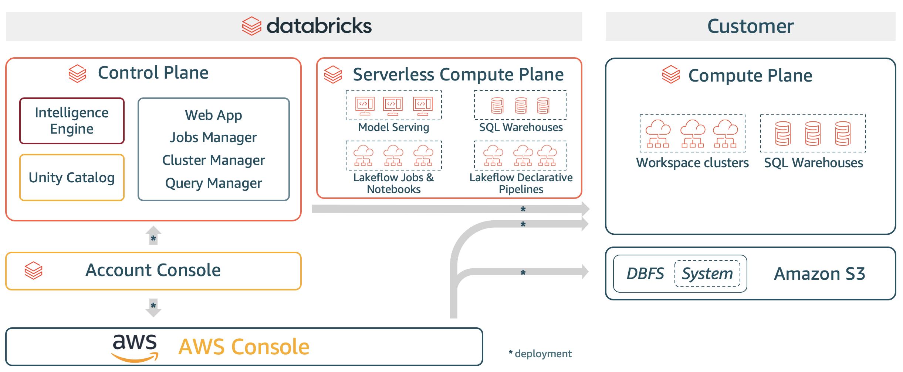
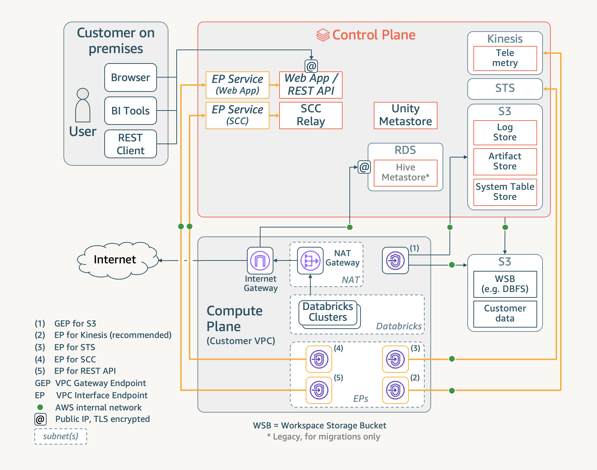
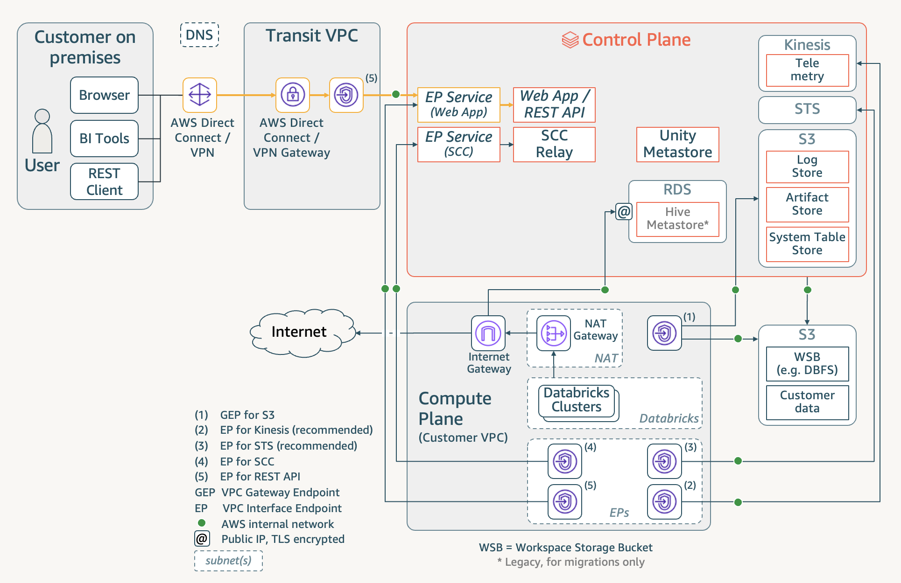
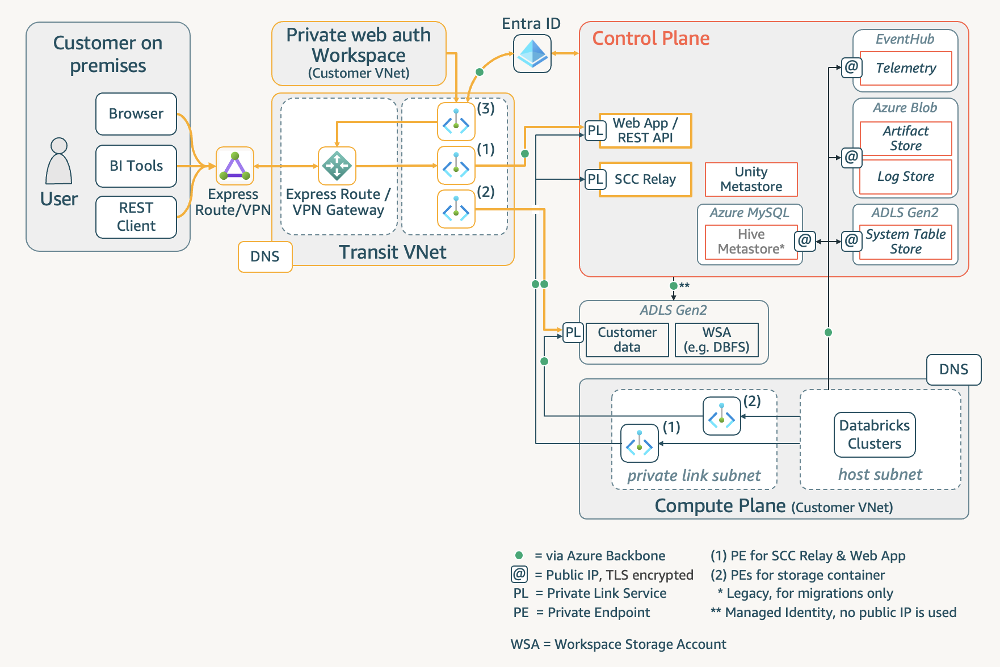

Databricks Workspace
AWS & Azure | 일반 · Backend Private Link · Frontend Private Link
화살표 키 또는 스페이스바로 네비게이션 · ESC로 전체 슬라이드 보기
목차
AWS 일반 구성VPC, IAM, S3, Workspace 생성
Azure 일반 구성VNet, NSG, Storage, Workspace 배포
AWS Backend Private LinkCompute → Control Plane 전용 연결
Azure Backend Private LinkData Plane → Control Plane Private Endpoint
AWS Frontend Private Link사용자 → Workspace 전용 연결 (Transit VPC)
Azure Frontend Private Link사용자 → Workspace Private Endpoint 접속
Databricks 플랫폼 아키텍처 개요
Control Plane (Databricks 관리)
Web Application / REST API
Cluster Management
Notebook / Jobs 저장소
Unity Catalog Metastore
Compute Plane (고객 환경)
Spark Clusters (EC2 / VMs)
고객 VPC / VNet 내 실행
데이터 저장소 (S3 / ADLS) 접근
Serverless Compute (Databricks 관리)
Control Plane은 Databricks가 관리하며, Compute Plane은 고객 클라우드 계정에서 실행됩니다
일반 워크스페이스 구성
VPC · IAM · S3 · Workspace 생성
AWS 배포 아키텍처

AWS Databricks 배포 아키텍처
Control Plane ↔ Compute Plane (Customer VPC) ↔ S3
'" />
Databricks 워크스페이스는 Control Plane(Databricks 관리)과 Compute Plane(고객 VPC)으로 구성됩니다.
Account Console 또는 Terraform을 통해 생성할 수 있습니다.
0 사전 준비 사항
항목 요구사항
Databricks Account Enterprise Platform Tier 이상 Account Admin 권한 Account Console 접속 가능 AWS 권한 VPC, Security Group, Subnet 관리 AWS 권한 S3 Bucket 생성 및 정책 수정 AWS 권한 IAM Role / Policy 생성 및 편집
1 Unity Catalog Metastore 생성 (선택)
Metastore는 Unity Catalog의 최상위 컴포넌트
같은 Account + Region 내 모든 워크스페이스에서 공유
Account Console → Catalog → Create metastore
권장: S3 bucket path 및 IAM role ARN은 비워두세요.
2 Customer VPC 생성AWS Console → VPC → Create VPC
VPC and More 옵션 선택IPv4 CIDR: /25 이상 확보
Availability Zone: 최소 2개
Private Subnet: 4개 (각 /26 이상)
S3 Gateway Endpoint: 포함
DNS hostname/resolution: 활성화
Note: VPC ID와 Private Subnet ID를 반드시 기록해두세요.
3 Security Group 설정VPC Dashboard → Security Groups → Create security group
Egress (Outbound) Rules
Type Port Destination
All TCP All Self (SG 자기 참조) All UDP All Self (SG 자기 참조) HTTPS 443 0.0.0.0/0 Custom TCP 8443-8451 0.0.0.0/0 Custom TCP 6666 0.0.0.0/0
Ingress (Inbound) Rules
Type Port Source
All TCP All Self (SG 자기 참조) All UDP All Self (SG 자기 참조)
Security Group ID를 기록해두세요 (워크스페이스 생성 시 필요)Security Groups 공식 문서
4 Cross-Account IAM Role 생성IAM → Roles → Create role → Custom Trust Policy
{
"Version": "2012-10-17",
"Statement": [{
"Effect": "Allow",
"Principal": {
"AWS": "arn:aws:iam::414351767826:root"
},
"Action": "sts:AssumeRole",
"Condition": {
"StringEquals": {
"sts:ExternalId": "<YOUR_DATABRICKS_ACCOUNT_ID>"
}
}
}]
}
414351767826 은 Databricks의 AWS Account ID입니다.sts:ExternalId에는 Databricks Account ID를 입력합니다.
5 Default Storage (S3 Bucket + IAM Role)
S3 Bucket 생성
워크스페이스와 같은 Region에 생성
Block Public Access 활성화
Bucket Versioning 권장
Storage IAM Role
UC Master Role + Self-assume Trust Policy
S3 접근 Inline Policy 추가
Trust Policy (Self-assume 패턴)
{
"Version": "2012-10-17",
"Statement": [{
"Effect": "Allow",
"Principal": { "AWS": [
"arn:aws:iam::414351767826:role/unity-catalog-prod-UCMasterRole-14S5ZJVKOTYTL",
"arn:aws:iam::<YOUR-ACCOUNT>:role/<THIS-ROLE>"
]},
"Action": "sts:AssumeRole",
"Condition": { "StringEquals": {
"sts:ExternalId": "<DATABRICKS-ACCOUNT-ID>"
}}
}]
}
414351767826 : Databricks AWS Account ID ·
참고: Storage Configuration 공식 문서
5 S3 Bucket Access Inline Policy{
"Version": "2012-10-17",
"Statement": [
{
"Effect": "Allow",
"Action": ["s3:GetObject", "s3:PutObject", "s3:DeleteObject"],
"Resource": "arn:aws:s3:::<BUCKET>/unity-catalog/*"
},
{
"Effect": "Allow",
"Action": ["s3:ListBucket", "s3:GetBucketLocation"],
"Resource": "arn:aws:s3:::<BUCKET>"
},
{
"Effect": "Allow",
"Action": ["sts:AssumeRole"],
"Resource": ["arn:aws:iam::<AWS-ACCOUNT-ID>:role/<THIS-ROLE-NAME>"]
}
]
}
SSE-KMS 사용 시 kms:Decrypt, kms:Encrypt, kms:GenerateDataKey* 권한 추가 필요
6 워크스페이스 생성Account Console → Workspaces → Create a workspace
Workspace name 및 Region 입력
Storage and Compute → Use your existing cloud account
Cloud Credentials : Cross-Account IAM Role ARN 입력Cloud Storage : S3 Bucket 이름 + Root Storage Role ARN 입력Network Configuration : VPC ID, Subnet IDs, Security Group ID 입력Create workspace 클릭
7 워크스페이스 접속 확인
확인 사항:
워크스페이스 URL 접속 가능 여부
클러스터 생성/시작 정상 작동
S3 접근 (DBFS) 정상 작동
Unity Catalog Metastore 연동 확인
TF Terraform 예제 — AWS 일반 구성provider "databricks" {
alias = "mws"
host = "https://accounts.cloud.databricks.com"
account_id = var.databricks_account_id
}
resource "databricks_mws_credentials" "this" {
provider = databricks.mws
credentials_name = "${var.prefix}-creds"
role_arn = aws_iam_role.cross_account.arn
}
resource "databricks_mws_storage_configurations" "this" {
provider = databricks.mws
account_id = var.databricks_account_id
storage_configuration_name = "${var.prefix}-storage"
bucket_name = aws_s3_bucket.root_storage.bucket
}
resource "databricks_mws_networks" "this" {
provider = databricks.mws
account_id = var.databricks_account_id
network_name = "${var.prefix}-network"
vpc_id = aws_vpc.main.id
subnet_ids = aws_subnet.private[*].id
security_group_ids = [aws_security_group.databricks.id]
}
resource "databricks_mws_workspaces" "this" {
provider = databricks.mws
account_id = var.databricks_account_id
workspace_name = var.prefix
aws_region = var.region
credentials_id = databricks_mws_credentials.this.credentials_id
storage_configuration_id = databricks_mws_storage_configurations.this.storage_configuration_id
network_id = databricks_mws_networks.this.network_id
}
참고: Databricks Terraform Provider 공식 문서
Backend Private Link
Compute Plane → Control Plane 전용 연결
AWS Backend Private Link 아키텍처

Backend Private Link 아키텍처
Compute Plane (Customer VPC) → VPC Endpoints → Control Plane
'" />
Frontend Private Link
사용자 → Control Plane 전용 연결 (Transit VPC)
AWS Frontend Private Link 아키텍처

Frontend Private Link 아키텍처
User (On-prem) → Transit VPC → VPC Endpoint → Control Plane
'" />
목적: 사용자가 공용 인터넷을 거치지 않고 Private Link를 통해 Databricks 웹 애플리케이션에 접속
Transit VPC 요구사항
항목 요구사항
Transit VPC 사용 가능한 VPC 존재 Private Subnet 1개 이상의 Private Subnet Security Group HTTPS/443 양방향 허용 On-prem 연결 VPN/Direct Connect 통한 Transit VPC 접속 경로
참고: 경우에 따라 Customer VPC와 Transit VPC를 하나의 VPC로 통합할 수 있으며,
이 경우 동일한 REST API Endpoint를 Backend/Frontend 모두에 재사용합니다.
1 Frontend VPC Endpoint 생성Transit VPC 에서 VPC Endpoint 생성
Service type: services that use NLBs and GWLBs
Service name: Regional Workspace (REST API) 서비스명
(Backend PL의 REST API Endpoint와 동일한 서비스명)
VPC: Transit VPC 선택
Subnet: Transit VPC의 Private Subnet 선택
이름 예: databricks-us-west-2-workspace-fe-vpce
AWS VPC Endpoint ID를 기록하세요 (Frontend-REST-API-endpoint )
2 Account Console에 Frontend Endpoint 등록Account Console → Security → Connectivity → VPC Endpoints
Register VPC endpoint 클릭설명적인 이름 입력 (Frontend임을 구분할 수 있도록)
Region 선택
Frontend-REST-API-endpoint AWS VPC Endpoint ID 입력등록 완료
3 Private Access Settings 생성Account Console → Security → Connectivity → Private access settings
Private Access Settings 객체는 워크스페이스의 Frontend Private Link 연결을 정의
설정 항목:
Public Access : Disabled (Private Link만 허용) 또는 EnabledPrivate Access Level : Account / Any
워크스페이스에 이 설정을 적용하여 Frontend PL 활성화
4 DNS 구성사용자 요청이 Frontend VPC Endpoint로 라우팅되도록 DNS 설정
Route53 Private Hosted Zone
Zone: cloud.databricks.com
CNAME: 워크스페이스 URL → Frontend Endpoint DNS
Transit VPC에 연결
DNS 해석 흐름: 사용자 → On-prem DNS → Route53 Private Hosted Zone → Frontend VPC Endpoint Private IP
5 접속 확인
검증 단계:
On-prem 또는 Transit VPC에서 nslookup {workspace-url} 실행
Private IP로 해석되는지 확인
브라우저에서 워크스페이스 URL 접속
Public 접근 비활성화 시 외부에서 접속 불가 확인
TF Terraform 예제 — AWS Frontend Private Link# Frontend VPC Endpoint (Transit VPC에 생성)
resource "aws_vpc_endpoint" "frontend" {
vpc_id = aws_vpc.transit.id
service_name = "com.amazonaws.vpce.ap-northeast-2.vpce-svc-0babb9bde64f34d7e"
vpc_endpoint_type = "Interface"
security_group_ids = [aws_security_group.frontend_vpce.id]
subnet_ids = [aws_subnet.transit_private.id]
private_dns_enabled = true
}
# Databricks에 Frontend Endpoint 등록
resource "databricks_mws_vpc_endpoint" "frontend" {
provider = databricks.mws
account_id = var.databricks_account_id
aws_vpc_endpoint_id = aws_vpc_endpoint.frontend.id
vpc_endpoint_name = "${var.prefix}-frontend-vpce"
region = var.region
}
# Private Access Settings
resource "databricks_mws_private_access_settings" "this" {
provider = databricks.mws
account_id = var.databricks_account_id
private_access_settings_name = "${var.prefix}-pas"
region = var.region
public_access_enabled = false # true = 하이브리드
private_access_level = "ACCOUNT"
}
# Workspace에 PAS 적용
resource "databricks_mws_workspaces" "this" {
# ... 기존 설정 ...
private_access_settings_id = databricks_mws_private_access_settings.this.private_access_settings_id
}
Frontend Private Link
사용자 → Workspace Private Endpoint 접속
Azure Frontend Private Link 아키텍처

Azure Frontend Private Link 아키텍처
User (On-prem/VPN) → Transit VNet → Private Endpoint → Control Plane
'" />
1 Transit VNet 구성
사용자 접속용 별도 VNet 생성 (또는 기존 Hub VNet 사용)
Private Endpoint용 서브넷 확보
On-prem에서 VPN Gateway / ExpressRoute 통한 접속 경로 확보
Hub-Spoke 아키텍처: 대부분의 엔터프라이즈 환경에서는 Hub VNet에 Frontend Private Endpoint를 배치하고,
Spoke VNet에 Databricks 워크스페이스를 배포하는 패턴을 사용합니다.
2 Frontend Private Endpoint 생성Transit VNet에 사용자 접속용 Private Endpoint 생성
Resource type: Microsoft.Databricks/workspaces
Sub-resource: databricks_ui_api
VNet/Subnet: Transit VNet 의 PE 서브넷
3 Private DNS Zone 연결
기존 privatelink.azuredatabricks.net DNS Zone에 Transit VNet 연결 추가
또는 새로운 DNS Zone 생성 후 Transit VNet에 연결
On-prem DNS에서 Azure Private DNS로 조건부 전달(Conditional Forwarding) 설정
On-prem DNS: On-prem 사용자가 Private Endpoint IP로 해석되려면
DNS Forwarder (Azure DNS Private Resolver 등)가 필요합니다.
4 공용 네트워크 접근 비활성화Azure Portal → Databricks Workspace → Networking
Allow public network access : No로 설정이후 모든 접속은 Private Endpoint를 통해서만 가능
Required NSG rules : NoAzureDatabricksRules 선택 가능
5 접속 확인
검증 단계:
Transit VNet/On-prem에서 nslookup {workspace-url}
Private IP (10.x.x.x)로 해석되는지 확인
브라우저에서 워크스페이스 URL 접속
외부 네트워크에서 접속 불가 확인 (공용 접근 비활성화 시)
# DNS 해석 확인 예시
$ nslookup adb-1234567890123456.16.azuredatabricks.net
Address: 10.0.1.4 # Private IP로 해석됨
TF Terraform 예제 — Azure Frontend Private Link# 워크스페이스 — public access 비활성화
resource "azurerm_databricks_workspace" "this" {
# ... 기존 VNet Injection 설정 ...
public_network_access_enabled = false # Frontend PL: 공용 접근 차단
network_security_group_rules_required = "NoAzureDatabricksRules"
}
# Frontend PE — Transit VNet에 배치
resource "azurerm_private_endpoint" "frontend" {
name = "${var.prefix}-frontend-pe"
location = var.location
resource_group_name = azurerm_resource_group.transit.name
subnet_id = azurerm_subnet.transit_pe.id
private_service_connection {
name = "${var.prefix}-frontend-psc"
private_connection_resource_id = azurerm_databricks_workspace.this.id
is_manual_connection = false
subresource_names = ["databricks_ui_api"]
}
private_dns_zone_group {
name = "default"
private_dns_zone_ids = [azurerm_private_dns_zone.databricks.id]
}
}
# 인증 전용 워크스페이스 (browser_authentication PE 용)
resource "azurerm_databricks_workspace" "web_auth" {
name = "WEB-AUTH-DO-NOT-DELETE-${var.region}"
resource_group_name = azurerm_resource_group.this.name
location = var.location
sku = "premium"
public_network_access_enabled = false
network_security_group_rules_required = "NoAzureDatabricksRules"
custom_parameters { /* VNet Injection */ }
}
# Browser Authentication PE — Transit VNet에 배치
resource "azurerm_private_endpoint" "browser_auth" {
name = "${var.prefix}-browser-auth-pe"
location = var.location
resource_group_name = azurerm_resource_group.transit.name
subnet_id = azurerm_subnet.transit_pe.id
private_service_connection {
name = "${var.prefix}-browser-auth"
private_connection_resource_id = azurerm_databricks_workspace.web_auth.id
is_manual_connection = false
subresource_names = ["browser_authentication"]
}
private_dns_zone_group {
name = "default"
private_dns_zone_ids = [azurerm_private_dns_zone.databricks.id]
}
}
SSO 설정
AWS IAM Identity Center · Azure Entra ID · Okta
Account-level SSO · SAML 2.0 / OIDC · SCIM Provisioning · Unified Login
AWS IAM Identity Center (SSO)
개요: AWS IAM Identity Center (구 AWS SSO)를 Databricks의 Identity Provider로 설정하여
SAML 2.0 기반 Single Sign-On을 구성합니다.
Account-level SSO : 모든 워크스페이스에 일괄 적용 (권장)Unified Login : Account SSO 설정을 워크스페이스에 자동 전파
(2023.06.21 이후 생성 계정은 기본 활성화) JIT Provisioning : 첫 SSO 로그인 시 Databricks 사용자 자동 생성
(2025.05.01 이후 생성 계정은 기본 활성화) SCIM Provisioning으로 사용자/그룹 사전 동기화 가능
참고: 공식 문서
1 IAM Identity Center 앱 등록
AWS Console → IAM Identity Center → Applications → Add application
Application catalog에서 Databricks 검색 선택
IAM Identity Center sign-in URL 과 Public Certificate 를 저장/다운로드Application metadata → Manual entry 선택:
Application ACS URL : Databricks Account Console에서 제공하는 Redirect URL Application SAML audience : 동일한 Redirect URL
주의: ACS URL / SAML audience에는 Databricks Account Console의 Security → Authentication → Manage 에서
제공하는 Redirect URL을 사용하세요. 하드코딩된 URL이 아닙니다.
2 Databricks Account Console 설정
Account Console → Security → Authentication → Manage
"Single sign-on with my identity provider" 선택Identity protocol: SAML 2.0 선택
필드 입력:
Single Sign-On URL : IAM Identity Center의 sign-in URLIdentity Provider Entity ID : IAM Identity Center의 sign-in URLx.509 Certificate : 다운로드한 인증서 전체 (-----BEGIN/END CERTIFICATE----- 포함)
Databricks Redirect URL을 복사 → IAM Identity Center에 붙여넣기
Save → Test SSO → Enable SSO
Account Console → Security → Authentication 설정 화면
sso-01-aws-account-console.png
3 User Provisioning
JIT Provisioning
첫 SSO 로그인 시 사용자 자동 생성
별도 설정 불필요 (기본 활성화)
그룹 동기화는 미지원
SCIM Provisioning (권장)
Account Console → User provisioning → Enable
SCIM Token + Endpoint URL 생성
IAM IC → Application → Provisioning에 입력
사용자 + 그룹 자동 동기화
Unified Login: Account-level SSO를 활성화하면 모든 워크스페이스에 자동 적용됩니다.
개별 워크스페이스 SSO 설정은 Unified Login이 비활성화된 경우에만 필요합니다.
Azure Entra ID (구 Azure AD) SSO
개요: Microsoft Entra ID를 Databricks의 Identity Provider로 설정합니다.
OIDC 와 SAML 2.0 두 가지 프로토콜을 모두 지원합니다.
Azure Databricks는 기본 Entra ID 통합 제공 (워크스페이스 레벨)
Account-level SSO 는 별도 Enterprise Application 등록 필요Conditional Access Policy로 MFA, 위치 기반 제어 가능
OIDC 선택 시 더 간단한 설정 가능
참고: 공식 문서
1 SAML 2.0: Enterprise Application 등록
Azure Portal → Entra ID → Enterprise applications
New application → "Integrate any other application you don't find in the gallery"Properties → Assignment required: No
Single sign-on → SAML 선택
Basic SAML Configuration:
Entity ID : Databricks Account Console에서 제공하는 SAML URL Reply URL : 동일한 SAML URL
SAML Signing Certificate → Sign SAML response and assertion (SHA-256)
2 Attribute Claims & Databricks 설정
Entra ID Attribute Mappings
Claim Value
Unique User ID (Name ID) user.mail
x.509 Certificate (Base64) 다운로드
Databricks Account Console
Security → Authentication → Manage
Single Sign-On URL : Azure Login URLEntity ID : Microsoft Entra ID Identifierx.509 Certificate : 다운로드한 인증서Test SSO → Enable SSO
OIDC 대안: SAML 대신 OIDC를 선택하면 App Registration에서 Client ID, Client Secret, Issuer URL만 입력하면 됩니다.
3 SCIM Provisioning & Conditional Access
SCIM 설정
Enterprise App → Provisioning → Automatic
Tenant URL : Databricks SCIM EndpointSecret Token : Databricks SCIM TokenMappings 확인 → Start provisioning
Conditional Access (선택)
Entra ID → Security → Conditional Access
New policy → Databricks App 선택
MFA 강제, IP 범위 제한
Compliant Device만 허용 등
Custom Username Claim: 기본은 email. 커스텀 claim 사용 시
App Manifest에서 "acceptMappedClaims": true 설정이 필요합니다.
Okta SSO 연동
개요: Okta를 3rd-party Identity Provider로 사용하여 Databricks에 SSO를 구성합니다.
OIDC 와 SAML 2.0 모두 지원하며, AWS / Azure 모든 환경에 적용 가능합니다.
Okta Integration Network (OIN)에 Databricks 앱 카탈로그 제공
SAML 2.0 / OIDC 기반 SSO + SCIM Provisioning 지원
Account-level 또는 Workspace-level SSO 모두 가능
참고: 공식 문서
1 Okta Application 설정 (SAML)
Okta Admin → Applications → Browse App Catalog
Databricks 검색 → Add Integration Sign-On → SAML 2.0:
Databricks SAML URL 입력 (Account Console에서 복사)Application username format : Email
Setup Instructions에서 복사:
Identity Provider Single Sign-On URL Identity Provider Issuer x.509 Certificate
Okta "Everyone" 그룹 할당 (또는 특정 그룹만)
2 Databricks 연동 & SCIM
SSO 설정
Account Console → Security → Authentication
SAML 2.0 선택
Okta의 SSO URL, Entity ID, Certificate 입력
Redirect URL을 Okta에 복사
Test SSO → Enable
SCIM Provisioning
Okta → Provisioning → API Integration
SCIM Endpoint URL + Token 입력
Push Groups로 그룹 동기화
사용자 할당 → 자동 프로비저닝
OIDC 대안: SAML 대신 OIDC 선택 시 Okta에서 OIDC - OpenID Connect Web Application으로 생성하고
Client ID, Client Secret, Issuer URL만 입력하면 됩니다.
SSO 구성 비교
항목 IAM Identity Center Entra ID Okta
지원 프로토콜 SAML 2.0 OIDC / SAML 2.0OIDC / SAML 2.0SCIM 지원 O O O JIT Provisioning O (기본) O (기본) O (기본) 기본 통합 환경 AWS Azure (기본 제공) 모든 환경 (3rd-party) Conditional Access AWS 정책 기반 Entra CA Policy Okta Policy MFA IAM IC MFA Entra ID MFA Okta Verify Account-level SSO O O O Unified Login O O O
Unified Login: Account-level SSO를 워크스페이스에 자동 전파 (2023.06.21 이후 계정 기본 활성화)